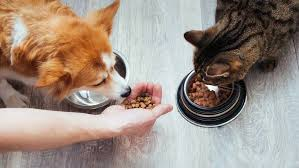
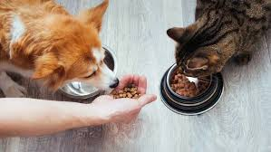

Blog

Consejo de salud
Cómo mantener a tu mascota feliz y saludable.
Nutrición adecuada
La importancia de una dieta balanceada para mascotas.
Cuidamos a tus mascotas con amor y profesionalismo.
Atención médica profesional.
Cuidado estético para tus mascotas.
Protección contra enfermedades.
Cómo mantener a tu mascota feliz y saludable.
La importancia de una dieta balanceada para mascotas.
📍 Dirección: Calle Principal #123, Ciudad
📞 Teléfono: +591 70000000
📧 Email: contacto@patitasfelices.com